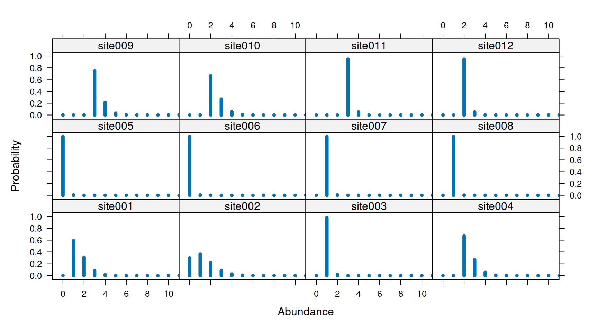
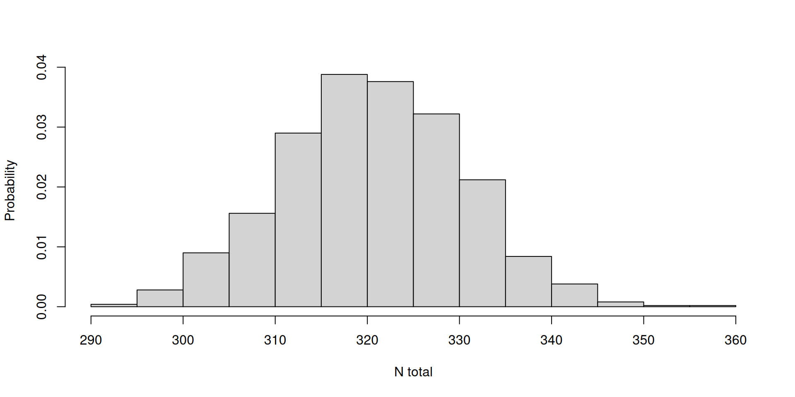
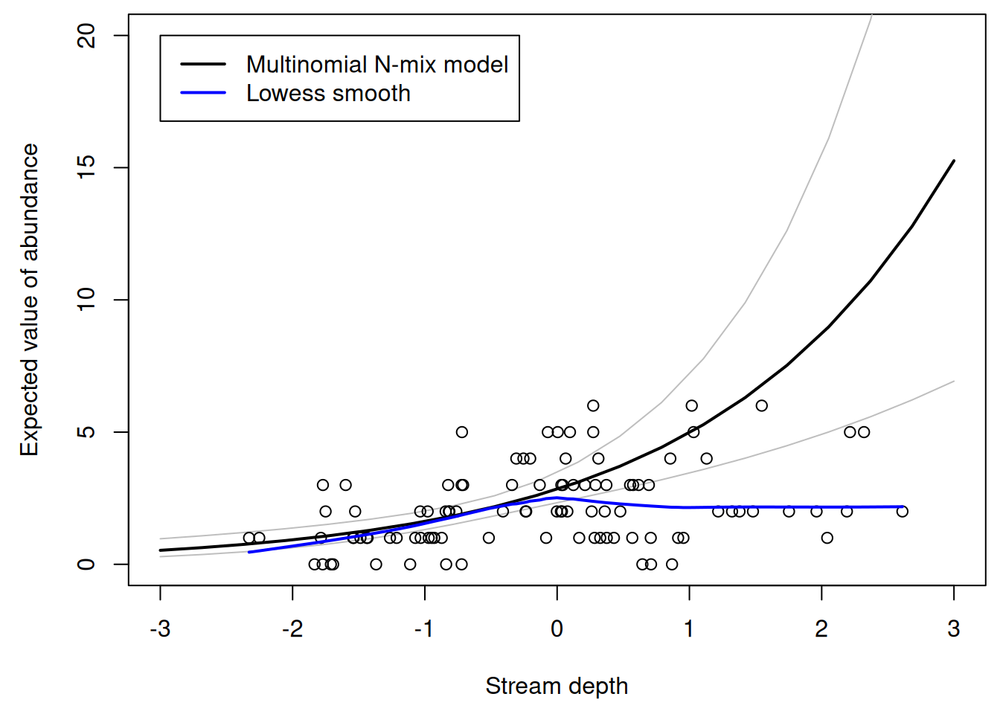
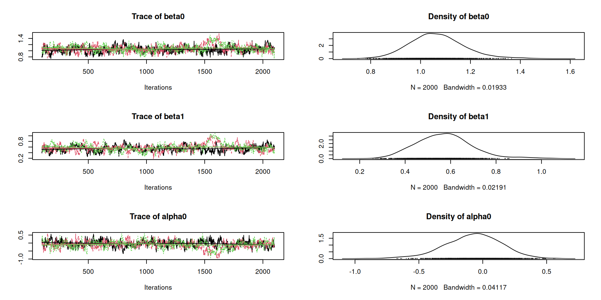
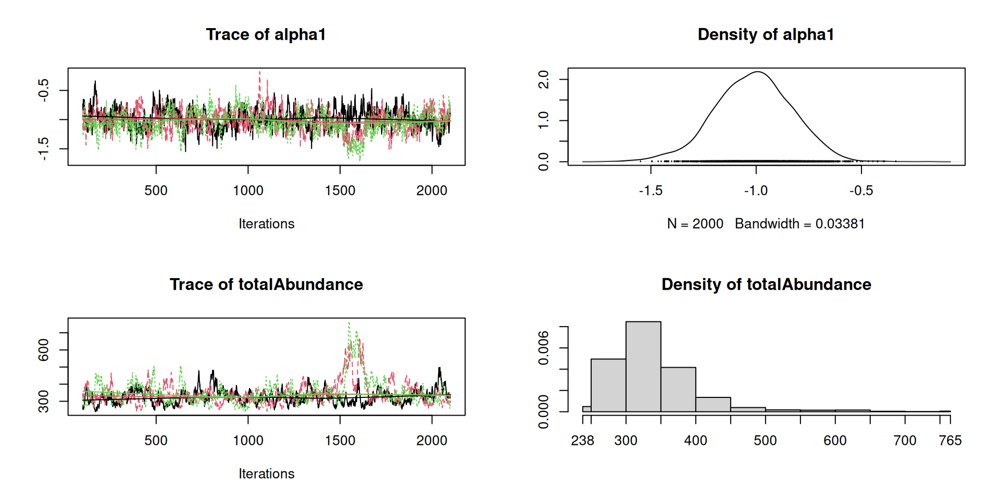

survived depredated starved
[1,] 10 9 1Lecture 7 – Multinomial \(N\)-mixture models:
simulation, fitting, and prediction
WILD(FISH) 8390
Inference for Models of Fish and Wildlife Population Dynamics
The objectives are the same as with binomial \(N\)-mixture models.
The difference is that, instead of repeated count data at each site, we have data from sampling methods such as:
State model (with Poisson assumption) \[ \mathrm{log}(\lambda_i) = \beta_0 + \beta_1 {\color{blue} x_{i1}} + \beta_2 {\color{blue} x_{i2}} + \cdots \\ N_i \sim \mathrm{Poisson}(\lambda_i) \]
Observation model \[ \mathrm{logit}(p_{ij}) = \alpha_0 + \alpha_1 {\color{blue} x_{i1}} + \alpha_2 {\color{Purple} w_{ij}} + \cdots \\ \{y_{i1}, \dots, y_{iK}\} \sim \mathrm{Multinomial}(N_i, \pi(p_{i1}, \dots, p_{iJ})) \]
Definitions
\(\lambda_i\) – Expected value of abundance at site \(i\)
\(N_i\) – Realized value of abundance at site \(i\)
\(p_{ij}\) – Probability of detecting an individual at site \(i\) on occasion \(j\)
\(\pi(p)\) – Function mapping \(J\) detection probs to \(K\) multinomial cell probs
\(y_{ik}\) – Multinomial count data (The final count is not observed!)
\(\color{blue} x_1\) and \(\color{blue} x_2\) – site covariates \(\color{Purple} w\) – observation covariate
This is the first multivariate distribution we’ve covered. \[ \{y_{1}, \dots, y_{K}\} \sim \mathrm{Multinomial}(N, \{\pi_i, \dots, \pi_K\}) \]
The multinomial describes how \(N\) objects are distributed among \(K\) classes (also called bins, categories, etc).
Imagine \(N=20\) animals are studied for 1 year and there are 3 possible “fates” with associated probabilities: \(\Pr(\mathrm{survived})=0.5\), \(\Pr(\mathrm{depredated})=0.3\), \(\Pr(\mathrm{starved})=0.2\).
Here is one possible outcome:
Benefits of the multinomial \(N\)-mixture model
Removal sampling \[ {\pi(p)} = \{p, (1-p)p, (1-p)^2p, \dots, (1-p)^{K-1}p, (1-p)^K\} \]
Double observer (independent observers) \[ {\pi(p)} = \{p_1(1-p_2), (1-p_1)p_2, p_1p_2, (1-p_1)(1-p_2)\} \]
Double observer (dependent observers) \[ {\pi(p)} = \{p_1, (1-p_1)p_2, (1-p_1)(1-p_2)\} \]
Removal sampling is often used in electrofishing studies.
A stream section is surveyed \(J\) times, fish are removed on each “pass”, and the rate of removal tells us about capture probability.
Definitions
| Description | Multinomial cell probability |
|---|---|
| Pr(first captured on first pass) | \(\pi_1 = p\) |
| Pr(first captured on second pass) | \(\pi_2 = (1-p)p\) |
| Pr(first captured on third pass) | \(\pi_3 = (1-p)(1-p)p\) |
| \(\cdots\) | \(\cdots\) |
| Pr(first captured on pass \(J\)) | \(\pi_J = (1-p)^{J-1}p\) |
| Pr(not captured) | \(\pi_{J+1} = (1-p)^J\) |
Abundance
Capture probability and multinomial counts
Discard final column of individuals not detected
| Pass 1 | Pass 2 | Pass 3 | |
|---|---|---|---|
| Site 1 | 0 | 1 | 1 |
| Site 2 | 1 | 2 | 0 |
| Site 3 | 2 | 0 | 1 |
| Site 4 | 2 | 0 | 0 |
| Site 5 | 7 | 1 | 1 |
| Site 6 | 2 | 1 | 0 |
| Site 7 | 3 | 2 | 1 |
| Site 8 | 2 | 0 | 0 |
| Site 9 | 4 | 0 | 1 |
| Site 10 | 0 | 1 | 0 |
Covariates
Coefficients, \(\lambda\), and \(p\)
Simulate abundance and removal data
N2 <- rpois(nSites, lambda=lambda2) ## local abundance
y2.all <- pi2 <- matrix(NA, nrow=nSites, ncol=K)
for(i in 1:nSites) {
pi2[i,] <- c(p2[i], (1-p2[i])*p2[i], (1-p2[i])^2*p2[i], (1-p2[i])^3)
y2.all[i,] <- rmultinom(n=1, size=N2[i], prob=pi2[i,])
}
y2 <- y2.all[,-K] ## Discard final column... individuals not detectedObservations
unmarkedFrame Object
100 sites
Maximum number of observations per site: 3
Mean number of observations per site: 3
Sites with at least one detection: 89
Tabulation of y observations:
0 1 2 3 4
153 98 32 13 4
Site-level covariates:
streamDepth
Min. :-2.328970
1st Qu.:-0.954293
Median : 0.001277
Mean :-0.120420
3rd Qu.: 0.569628
Max. : 2.610328 multinomPois has similar arguments as occu and pcount.
Call:
multinomPois(formula = ~streamDepth ~ streamDepth, data = umf)
Abundance (log-scale):
Estimate SE z P(>|z|)
(Intercept) 1.04 0.101 10.31 6.29e-25
streamDepth 0.56 0.115 4.89 1.02e-06
Detection (logit-scale):
Estimate SE z P(>|z|)
(Intercept) -0.0426 0.214 -0.199 8.42e-01
streamDepth -1.0084 0.171 -5.902 3.59e-09
AIC: 603.3294
Number of sites: 100Compare to actual parameter values:


Create data.frame with prediction covariates.
Get predictions of \(\lambda\) for each row of prediction data.
View \(\lambda\) predictions
plot(Predicted ~ streamDepth, lambda.pred, ylab="Expected value of abundance",
ylim=c(0,20), xlab="Stream depth", type="l", lwd=2)
lines(lower ~ streamDepth, lambda.pred, col="grey")
lines(upper ~ streamDepth, lambda.pred, col="grey")
points(rowSums(y2)~streamDepth)
lines(lowess(rowSums(y2)~streamDepth), col="blue", lwd=2) ## Lowess line for fun (it's way off)
There are several equivalent formulations of the multinomial that can be used to fit the model.
These are just probability tricks that can affect MCMC performance. See AHM I for details. Here, we will focus on the second option.
We can break the problem down into two steps by conditioning on \(n_i\), the number of individuals captured at site \(i\):
\[ n_i \sim \mathrm{Bin}(N_i, 1-\pi_K) \\ \{y_{i,1}, \dots, y_{i,K-1}\} \sim \mathrm{Multinomial}(n_i, \{\pi_{i,1}, \dots, \pi_{i,K-1}\}/(1-\pi_K)) \]
Note that the modified cell probabilities still sum to 1.
model {
lambda.intercept ~ dunif(0, 5)
beta0 <- log(lambda.intercept)
beta1 ~ dnorm(0, 0.5)
alpha0 ~ dnorm(0, 0.5)
alpha1 ~ dnorm(0, 0.5)
for(i in 1:nSites) {
log(lambda[i]) <- beta0 + beta1*streamDepth[i]
N[i] ~ dpois(lambda[i]) # Latent local abundance
logit(p[i]) <- alpha0 + alpha1*streamDepth[i]
pi[i,1] <- p[i] ## Pr(first captured in first pass)
pi[i,2] <- (1-p[i])*p[i] ## Pr(first captured in second pass)
pi[i,3] <- (1-p[i])^2*p[i] ## Pr(first captured in third pass)
pi[i,4] <- (1-p[i])^3 ## Pr(not captured)
n[i] ~ dbin(1-pi[i,4], N[i]) ## nCaptured at site i
y[i,1:3] ~ dmulti(pi[i,1:3]/(1-pi[i,4]), n[i])
}
totalAbundance <- sum(N[1:nSites])
}Put data in a named list
Initial values
Parameters to monitor
Iterations = 101:2100
Thinning interval = 1
Number of chains = 3
Sample size per chain = 2000
1. Empirical mean and standard deviation for each variable,
plus standard error of the mean:
Mean SD Naive SE Time-series SE
beta0 1.06570 0.1093 0.001411 0.007564
beta1 0.57281 0.1261 0.001628 0.011016
alpha0 -0.07862 0.2253 0.002908 0.013519
alpha1 -1.01330 0.1841 0.002376 0.012184
totalAbundance 340.36600 63.0831 0.814399 6.550871
2. Quantiles for each variable:
2.5% 25% 50% 75% 97.5%
beta0 0.8659 0.9922 1.05966 1.13139 1.3061
beta1 0.3523 0.4869 0.56798 0.64469 0.8707
alpha0 -0.5743 -0.2215 -0.06564 0.07506 0.3392
alpha1 -1.3958 -1.1346 -1.01035 -0.89113 -0.6677
totalAbundance 262.0000 300.0000 328.00000 363.00000 519.0000

Gelman-Rubin diagnostic (\(\hat{R}\))
Potential scale reduction factors:
Point est. Upper C.I.
alpha0 1.04 1.13
alpha1 1.06 1.18
beta0 1.05 1.15
beta1 1.08 1.24
totalAbundance 1.11 1.32
Multivariate psrf
1.06Convergence is suggested by \(\hat{R}\) close to 1.
It’s a good idea to have >500 effective posterior samples.
In addition to site covariates, you could also include observation covariates, but it’s hard to think of realistic covariates that would be specific to each pass.
Removal models get used in many scenarios other than electrofishing:
Two observers sample the same location at the same time, working independently.
After each survey, they compare notes and figure out which individual were detected by observer A only, B only, or by both.
Definitions
\(y_{i1}\) – number of individuals detected only by observer A
\(y_{i2}\) – number of individuals detected only by observer B
\(y_{i3}\) – number of individuals detected by observers A and B
\(p_1\) – probability that observer A detects an individual
\(p_2\) – probability that observer B detects an individual
| Description | Multinomial cell probability |
|---|---|
| Pr(detected by observer A but not B) | \(\pi_1 = p_1(1-p_2)\) |
| Pr(detected by observer B but not A) | \(\pi_2 = (1-p_1)p_2\) |
| Pr(detected by observers A and B) | \(\pi_3 = p_1p_2\) |
| Pr(not detected) | \(\pi_4 = (1-p_1)(1-p_2)\) |
Two observers sample at the same time, but observer B only records what observer A missed.
Often used in aerial waterfowl surveys.
Observers should switch roles to ensure parameter identifiability.
Definitions
\(y_{i1}\) – number of individuals detected by observer A
\(y_{i2}\) – number of individuals missed by A but detected by B
\(p_1\) – probability that observer A detects an individual
\(p_2\) – probability that observer B detects an individual
| Description | Multinomial cell probability |
|---|---|
| Pr(detected by observer A) | \(\pi_1 = p_1\) |
| Pr(detected by observer B but not A) | \(\pi_2 = (1-p_1)p_2\) |
| Pr(not detected) | \(\pi_3 = (1-p_1)(1-p_2)\) |
Abundance
Detection probability and multinomial counts
observer <- matrix(c("A","B","B","A"),
nrow=nSites, ncol=2, byrow=TRUE)
p1 <- 0.4 # Detection prob for observer A
p2 <- 0.3 # Detection prob for observer B
piAfirst <- c(p1, (1-p1)*p2, (1-p1)*(1-p2))
piBfirst <- c(p2, (1-p2)*p1, (1-p1)*(1-p2))
K <- length(piAfirst)
y.all <- matrix(NA, nrow=nSites, ncol=K)
for(i in 1:nSites) {
pi <- if(observer[i,1]=="A") piAfirst else piBfirst
y.all[i,] <- rmultinom(n=1, size=N[i], prob=pi) }Discard final column of individuals not detected
model {
lambda ~ dunif(0, 20) # Prior on E(N)
p1 ~ dunif(0, 1) # Prior on observer A detection prob
p2 ~ dunif(0, 1) # Prior on observer B detection prob
# Multinomial cell probs
piAfirst <- c(p1, (1-p1)*p2, (1-p1)*(1-p2)) # When obs A goes first
piBfirst <- c(p2, (1-p2)*p1, (1-p1)*(1-p2)) # When obs B goes first
for(i in 1:nSites) {
N[i] ~ dpois(lambda) # Latent local abundance
pi[i,1:3] <- ifelse(observer[i,1]==1, piAfirst, piBfirst)
n[i] ~ dbin(1-pi[i,3], N[i]) ## nDetected at site i
y[i,1:2] ~ dmulti(pi[i,1:2]/(1-pi[i,3]), n[i])
}
totalAbundance <- sum(N[1:nSites])
}Put data in a named list
Initial values
Parameters to monitor
In practice, there are often many observers on a project, even though only two survey at a time.
We can deal with this by including “observer ID” as an observation covariate. Everything else stays the same.
It can be hard to pull of the independent double observer method because observers often influence each other while working.
All of these methods require some sort of short-term individual identification of animals, even though they aren’t being marked.
If short-term individual ID isn’t possible, you could fall back on binomial \(N\)-mixture models.
Create a self-contained R script or Rmarkdown file to do the following:
unmarkedFrameMPois, use type="double"..R, .Rmd, or .qmd file to ELC by 5:00pm on Tuesday.